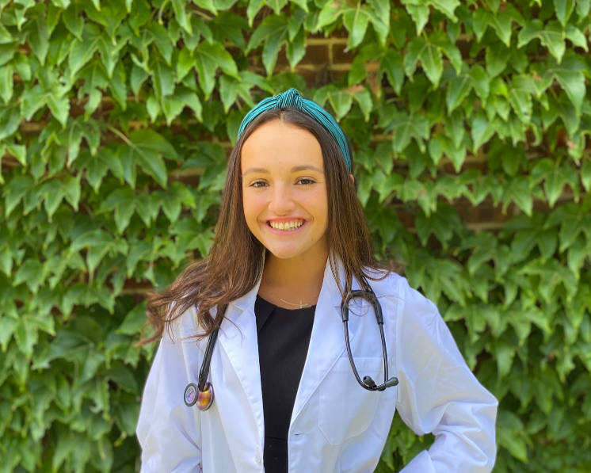

To equip those who shape adolescent development with actionable insights grounded in science.
We bring together researchers, clinicians, and community leaders to bridge disciplines and translate developmental research into meaningful practice. Together, we form a working alliance committed to advancing child and adolescent well-being.
Our work spans documentary film, podcast, micro-courses, a lecture series, and a weekly research blog. Every format serves one goal: get the science to the people who can use it.
"Youth developmental trajectories are drowning in information, and starving for understanding."
In college, I spent my time between two worlds that rarely spoke to each other: the football field and the neuroscience lab. What I kept noticing was the lack of cross talk. Everything we were uncovering about how the adolescent brain develops, how stress shapes it, and how specific experiences can actually armor the brain to adversity — none of it was being funneled into the lived experiences of the youth who desperately needed it.
That gap is why I founded Cortex Flex, a neuropsychological performance company built to give adolescents the mental and physical tools to thrive. The deeper I got into that work, the more clearly I heard another signal. In nearly every conversation with a parent, coach, or school administrator there was the same vulnerable confession underneath their questions: I want to do right by this kid. I just don't know where to start.
They weren't uninformed. If anything, they were overwhelmed, awash in headlines and hot takes and contradictory advice. They cared deeply. They wanted to learn and apply. The problem was that the developmental science they needed — translated honestly, accessibly, and practically — had never been handed to them.
CAPSuLe exists because of that moment of recognition. The adults in a young person's life are not peripheral to their development. They are the environment.
By educating adults, we change the path every young person walks along and the destinations they find.

{{ teamMember.bio }}

Kevin is a medical student at LECOM. He combines scientific insight with a commitment to service in health and athletics.
Danielle is a Resident Physician at the University of Pennsylvania. She is committed to advancing patient-centered care and bringing scientific rigor to clinical practice.

Maya is a PM&R resident at Johns Hopkins University. She brings a holistic, community-centered approach to promoting health and well-being through research, sports medicine, and athlete mentorship.
Yael is a PM&R resident at Jefferson Moss. He is dedicated to patient-centered rehabilitation and lifelong learning, with clinical interests in sports medicine and prosthetics.